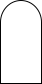
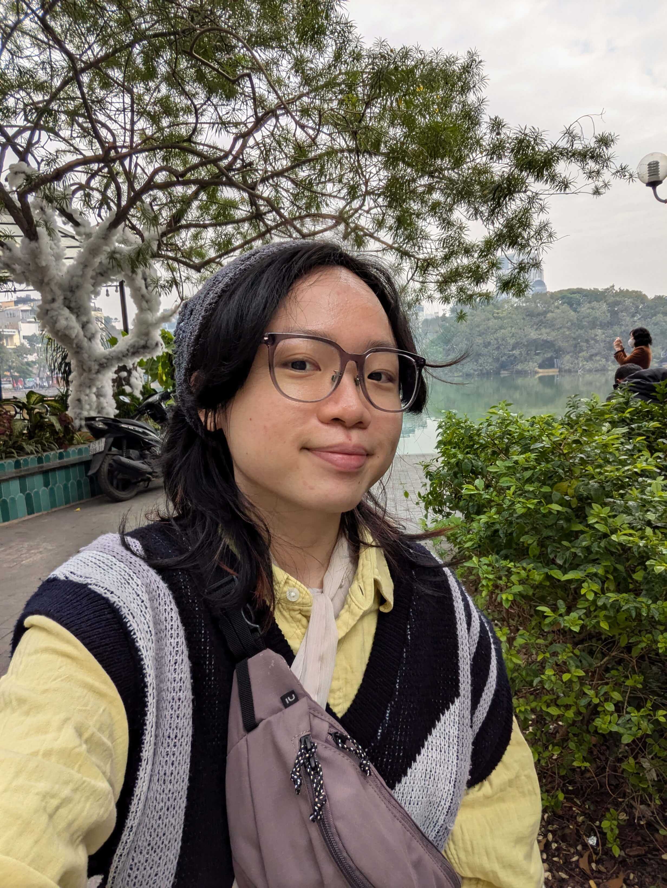

embodiedzones
1 April, 7.30pm – 9.30pm
Wushiren Studio (102E Pasir Panjang Rd, #08-03 Citilink Warehouse Complex, Singapore 118529)
$38
embodiedzones is a performance workshop which guides participants to cultivate a state of relaxed awareness and responsiveness (nonreactivity) from which a greater range and agility of choices become available, whether in performance work or in life.
Participants will be guided to establish bodily awareness within themselves as well as with other bodies in the space — a process which encompasses meditation, breathwork, physical movement, and contact with other bodies in space. In particular, the session focuses on bringing perception to neuroception and expanding one's sense of safety.
Led by Ang Kia Yee, a poet, performance-maker, counsellor, and director of Descendants (2025–), this workshop is open to participants of all backgrounds and levels, but will be particularly beneficial for participants seeking to establish a solid groundedness in the face of performance anxiety.
artist
Ang Kia Yee

Ang Kia Yee / kyatos is a transdisciplinary poet, performance-maker, and Founder of zone 境. She devises speculative, mutative fictions which offer tethers in mind, body, and spirit to alternative worlds, bodily states, systems, and relationships. She was a resident artist for the 2025 AiR Programme at The Godown, Kuala Lumpur and the 2024 Residency at the Intercultural Theatre Institute; a participating artist for Natasha, Singapore Biennale 2022; and a resident writer for Centre 42’s New Scripts Residency 2021.